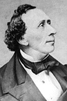

H.C. Andersen
Indledning
Hans Christian Andersen har skrevet skuespil, romaner, rejseskildringer og erindringsværker, men først og fremmest er han kendt og elsket for sine eventyr. Som en rød tråd gennem forfatterskabet løber ønsket om at høre til, passe ind og blive anerkendt, uanset om hovedpersonen er en grim ælling, en skorstensfejer eller en ung, aspirerende kunstner.
H. C. Andersens eventyr og historier overskrider det tidsbundne og det personlige. For i dem har han skabt universelle skikkelser og skæbner, der taler til læsere på tværs af alder, på tværs af vidt forskellige sprog og kulturer - og på tværs af den tidskløft på mere end 135 år, der er gået, siden han satte punktum for sit sidste eventyr.